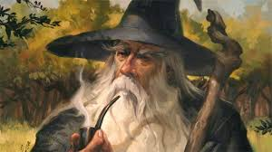

Needless were none of the deeds of Gandalf in life

Gandalf was known for being a far ranging traveler. One of his other names, Mithrandir, means "grey pilgrim"
Here lies a history of Gandalf's greatest tasks of the Third Age
2941 - Forming the company of "Thorin Oakenshield"
2941 - Investigate Dol Guldur for signs of the necromancer
2942 - 3017 -A watchful peace after necromancer fled
2942 - Returned to Shire with Bilbo and warned him of the dangers of the ring
3018 - Helped prompt Frodo's exit from the Shire after he inherited the ring from Bilbo
3018 - Helped organize the "Nine Walkers" and their journey to destroy the ring
3019 - Accompanied the Fellowship of the ring on their journey south
3019 - Defeated the Balrog inhabiting Moria
3019 - Aided Rohan in defeating the armies of Saruman
3019 - Aided Gondor in defeating the armies of Sauron
3019 - Fought in the Battle of the Morannon
3021 - Returned to the West, along with the other remaining bearers of the Rings of Power
All we have to decide is what to do with the time given to us